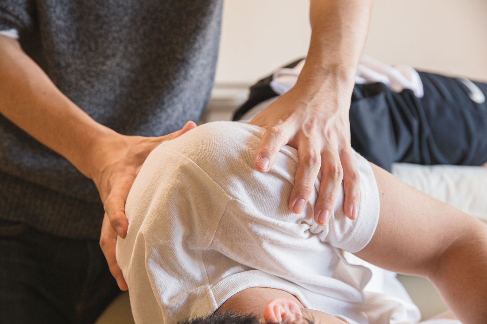

Terapia manual & osteopatia
Técnicas de manipulação e liberação miofascial para restaurar o movimento e aliviar a dor na origem.
OSTEOPATIA & FISIOTERAPIA · MACAÉ, RJ
Tratamento individual, da avaliação à alta — trabalhamos o corpo como um todo pra tratar a causa da sua dor, não só aliviar o sintoma.
NOSSO DIFERENCIAL
Muitas dores crônicas, tensões e fadigas não têm uma causa óbvia. Trabalhamos o corpo como um todo, usando terapia manual e osteopatia para reequilibrar o que está por trás do problema.
Técnicas de manipulação e liberação miofascial para restaurar o movimento e aliviar a dor na origem.
Em casos indicados, usamos um exame de avaliação do SNA para enxergar o que os exames de imagem não mostram.
Cada caso é único. O primeiro atendimento é uma conversa a fundo sobre seu histórico, antes de qualquer decisão.

COMO FUNCIONA
Nada de protocolo padrão: cada plano de tratamento nasce da sua anamnese e da sua avaliação.
QUEM CUIDA DE VOCÊ
NÃO DEIXE A DOR LIMITAR SUA ROTINA
Os relatos abaixo são de pacientes reais da Markésy — cada condição já foi tratada aqui.
Não deixe a dor limitar sua rotina.
Agende sua avaliação com a Markésy.
QUEM JÁ PASSOU POR AQUI
Depois que a Aline entrou na minha vida, nunca mais fui a mesma. Fizemos liberação miofacial e descompressão lombar por conta da artrodese. Já estou de alta, mas vou iniciar o fortalecimento muscular.
Eu não queria ficar tanto tempo me medicando com anti-inflamatórios ou corticoides, então fui em busca de um tratamento mais natural. Hoje faço a manutenção do meu tratamento, que foi longo.
Eu já tinha perdido os movimentos da minha perna, meus músculos estavam atrofiados e a equipe recuperou não só a parte física, mas também minha saúde psicológica.
PRÓXIMO PASSO
Fale com a gente e marque sua avaliação.